The slide of the lecture is on the left, the same figure on the right, computed in the browser from the same data. The ▶ button moves the parameter step by step.
Black–Scholes and the Greeks · Delta Hedging in Practice · Implied Volatility and the Smile · Bitcoin Options and the Volatility Surface · The VIX and the Variance Risk Premium · Options with Zero Days to Expiry · Case Studies: Option-Implied Bounds and Volatility Expectations
Black–Scholes and the Greeks
The Greeks: One Identity, All Sensitivities
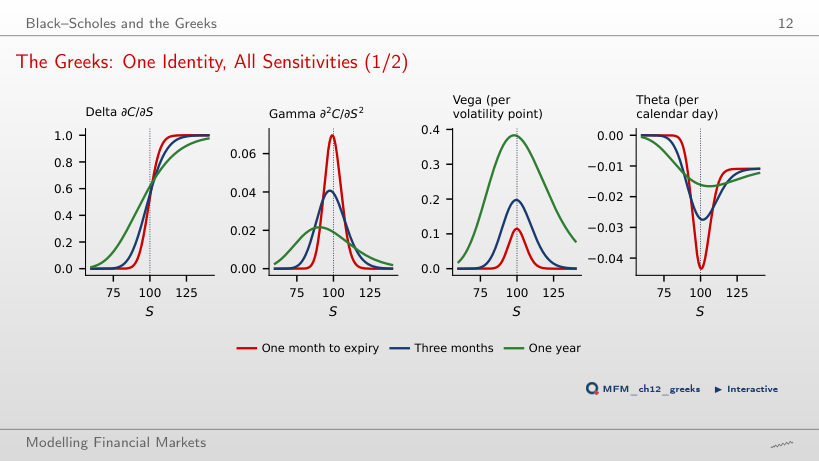
Answer
It falls from 0.078 to 0.016, almost like 1/σ, while vega stays almost constant (0.194 at σ = 10%, 0.197 at σ = 50%). At K = 100 and σ = 20%, the one-month call has the largest gamma (0.069, against 0.039 at three months and 0.019 at one year) and the fastest time decay (theta −0.043 a day), and the one-year call has the largest vega (0.381 per volatility point). For one expiry, vega = ΓS²στ: at S = 100 and σ = 20%, the three-month call has a vega of 0.197 per volatility point.
Delta Hedging in Practice
Discrete Delta Hedging: Algorithm and Error
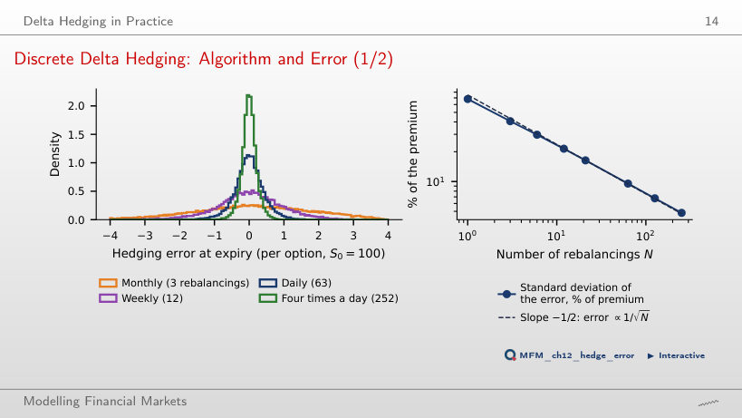
Answer
About four times as often, because the standard deviation falls like 1/√N (the estimated log-log slope is −0.48). With N = 252, four times a day, it is 4.8% of the premium. Transaction costs, however, grow with N: like N with a fixed cost per rebalancing, roughly like √N with costs proportional to the traded value.
Selling Volatility at 20%: Three Outcomes
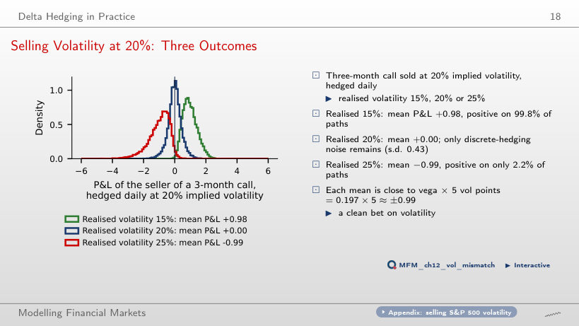
Answer
On only 2.2% of the paths. The mean P&L is −0.99 per option, with a standard deviation of 0.68. The mean is close to vega × 5 volatility points = 0.197 × 5. With realised volatility of 15%, the mean is +0.98, positive on 99.8% of the paths.
Implied Volatility and the Smile
Three Sources of a Smile
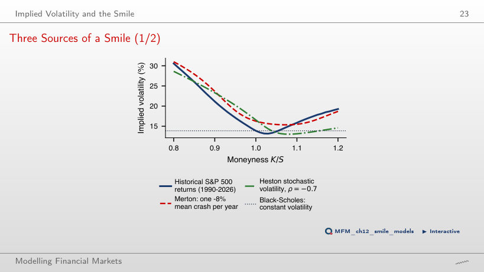
Answer
The tilt reverses: at ρ = +0.9, the Heston implied volatility is 19.8% at K/S = 0.8 and 28.2% at K/S = 1.2; at ρ = 0 the smile is nearly symmetric (23.7% and 22.4%). On the slide (ρ = −0.7), the highest implied volatility at K/S = 0.8 comes from the Merton jumps: 31.0%, against 16.3% ATM, close to the historical distribution (30.6%, against 13.9% ATM). Measured from the ATM level, the historical wing rises the most: 16.7 points, against 14.7 for Merton and 12.0 for Heston. Heston with ρ = −0.7 gives 28.6%, and its right wing is the lowest (15.0% at K/S = 1.2), because a negative correlation tilts the smile to the left.
Bitcoin Options and the Volatility Surface
The Bitcoin Smile
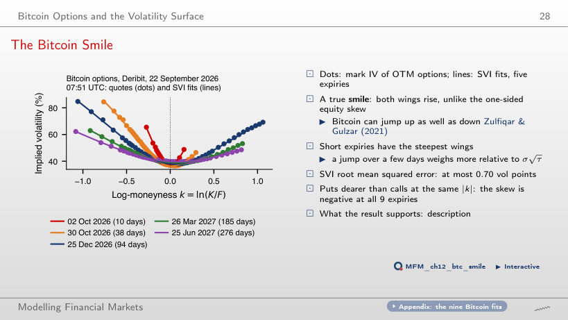
Answer
No. g(k) < 0 at some points for 2 expiries: 2 October 2026 (minimum −0.017) and 27 November 2026 (minimum −0.009), although the errors of these fits are small (0.23 and 0.12 volatility points). In shape it is a smile, not a skew: both wings rise, because Bitcoin can jump up as well as down. Puts are still slightly dearer than calls at |k| = 0.15: the skew IV(k = +0.15) − IV(k = −0.15) is negative at all 9 expiries, from −0.1 points (10 days) to −2.4 points (66 days). The root mean squared error of the SVI fits is at most 0.70 volatility points.
What the Market Prices for Bitcoin
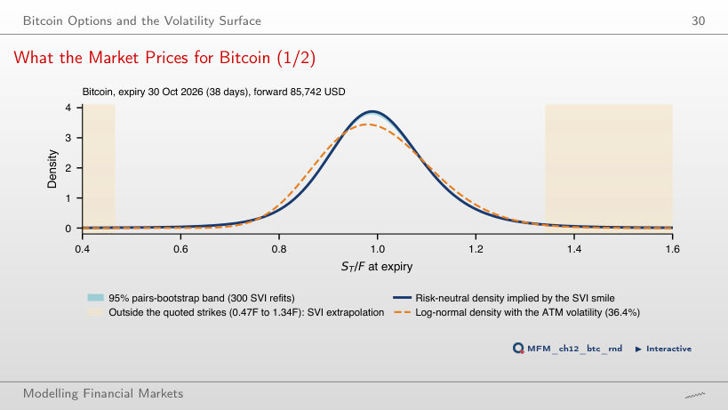
Answer
1.24%, with a bootstrap interval of 1.16–1.27%, about 9 times the 0.14% of a log-normal distribution with the ATM volatility of 36.4%. 0.16 of the 1.24 points lie below the lowest quoted strike (0.47F), where the density is an SVI extrapolation.
The VIX and the Variance Risk Premium
The VIX, 1990–2026
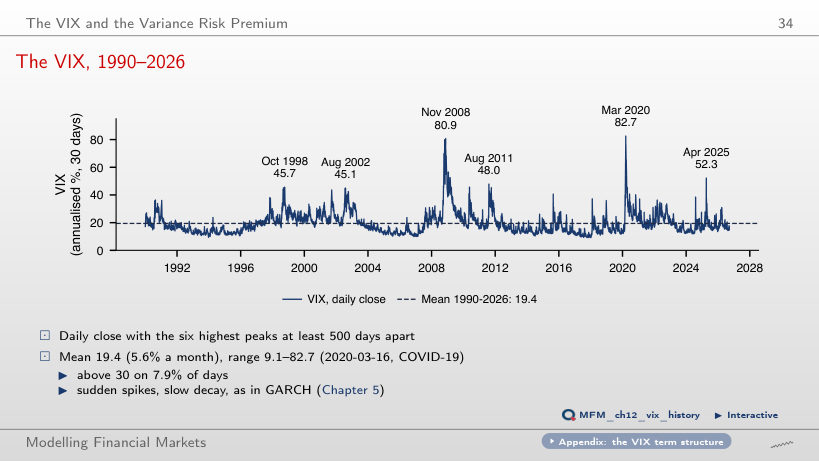
Answer
On 7.9% of days; above 20, on 37.0%, and above 50, on 0.8%. The mean is 19.4, and the maximum, 82.7, was reached on 16 March 2020. Spikes are sudden and decay slowly, as in GARCH models.
Implied vs Realised Volatility, S&P 500
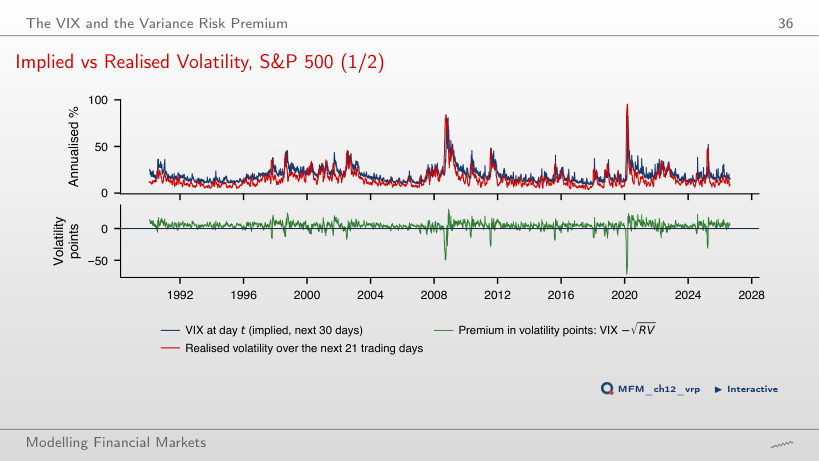
Answer
On 86% of days. The mean premium is 4.09 volatility points (Newey–West standard error 0.27), or 113 %² in variance, with t = 5.5. The exceptions are crashes: the worst window, starting on 20 February 2020, has −72.0 points. With the sample starting in 2020, the mean premium is still 3.82 points, but t = 0.9: the short sample no longer separates it from noise.
Is the VIX a Good Forecast?
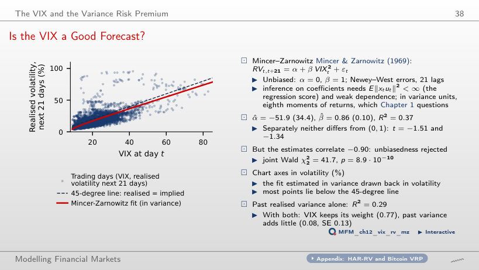
Answer
No. The two estimates have a correlation of −0.90, and the joint Wald test gives χ²₂ = 41.7, with p = 8.9·10⁻¹⁰. The VIX explains R² = 0.37 of the subsequent realised variance, past realised variance only 0.29.
Options with Zero Days to Expiry
Gamma and Time Decay Near Expiry
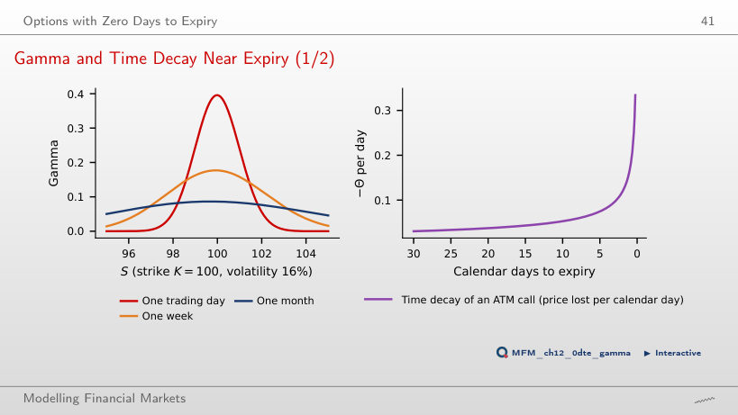
Answer
4.6 times (0.396 against 0.086), i.e. √21, because the ATM gamma is proportional to 1/√τ. A 1% move in the last day changes delta by about 0.4. Time decay is 0.167 in the last calendar day, against 0.030 with 30 days left.
Case Studies: Option-Implied Bounds and Volatility Expectations
Case Study: the Bound and the Realised Premium
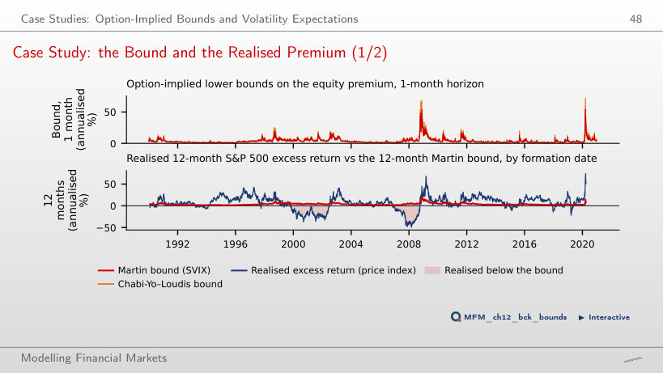
Answer
No. The bound restricts the conditional mean E_t[R^e], not each realisation. The paper does not reject validity (D₁ = 0 at every horizon) but rejects tightness: in the paper, with dividends, the mean slackness is 4.8–5.2 points a year (on the price index of the figure: 2.91 points at 12 months). The correlation between the bound and the realised return is only 0.15.
How the VIX Responds to a Shock to Expected Variance
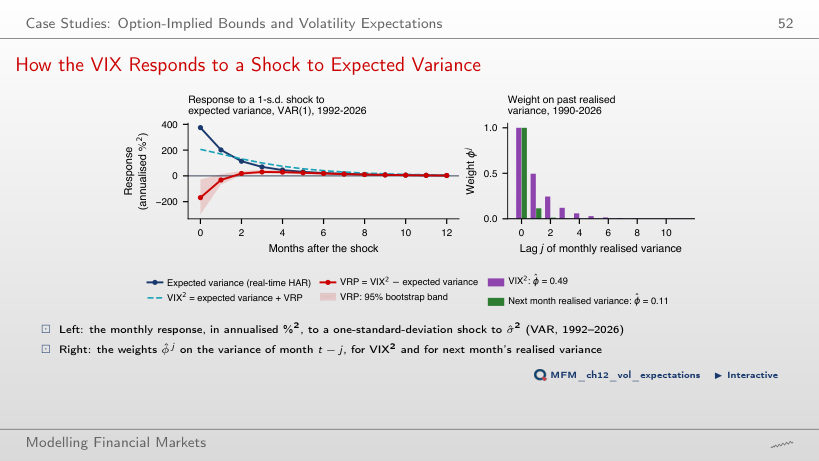
Answer
Negative in every sample: −69 %² up to 2005, −254 %² up to 2008; the 95% band contains zero only for the sample up to 2006. So this is not the best moment to sell volatility. Over the full sample, in the month of the shock the VRP response is −169 %² (pointwise 95% band: −300, −27): the VIX rises less than expected variance, so the volatility seller's premium falls exactly when risk is highest. The VRP response turns positive from month 2 and peaks in month 3 (+30 %²), once volatility has started to fall. The slow expectations also show in the weights: φ̂ = 0.49 for VIX², against 0.11 for next month's realised variance.
S&P 500 and VIX: EODHD daily closes, 1990–2026. Bitcoin options: snapshot of the Deribit chain, 22 September 2026, 07:51 UTC. Delta hedging: 20,000 paths of geometric Brownian motion. Case study: daily bounds from the replication package of Back, Crotty and Kazempour (2022); risk-free rate from the Kenneth French Data Library. Second case study: monthly S&P 500 and VIX, January 1990 – August 2026.